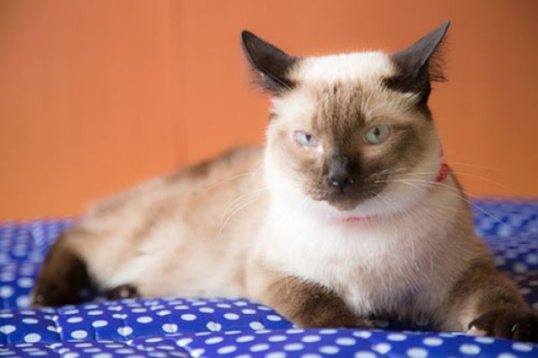
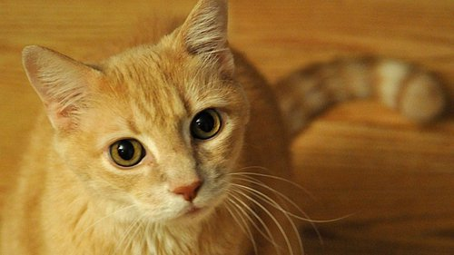
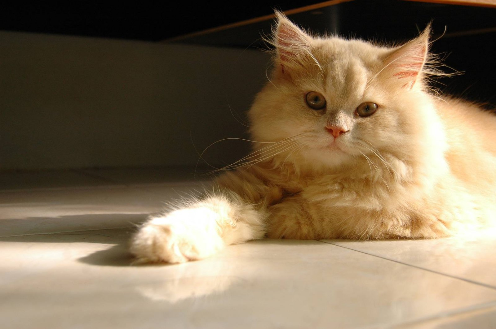
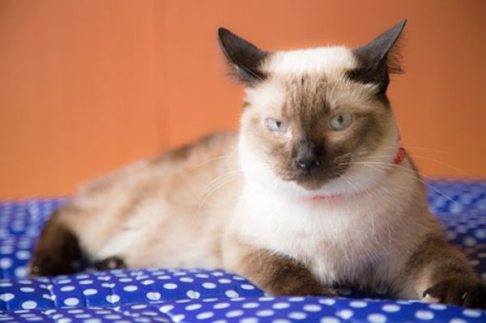
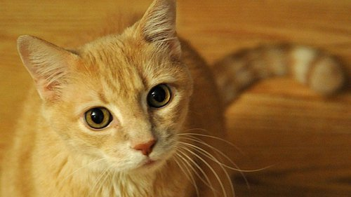
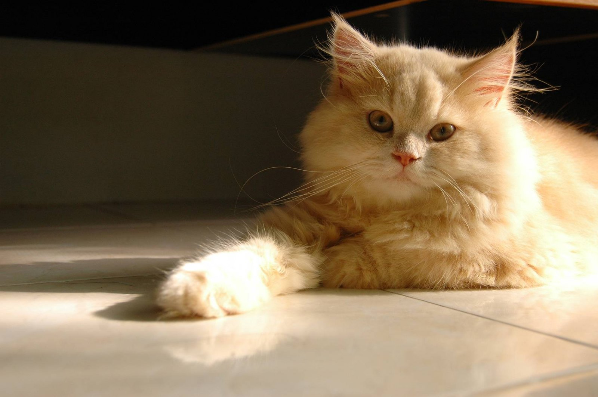

Bem Vindo!
Vamos adotar um Gatinho?
Conheça nossa ONG
A ONG Cats é uma organização sem fins lucrativos, sem patrocínio público ou privado que conta com a ajuda de voluntários. O trabalho da ONG consiste em resgate, tratamento e doação de animais, bem como conscientização sobre posse responsável, identificação do animal, orientação às pessoas sobre maus tratos.
| Resgate | Castração | Doações |
|---|---|---|
| + 1000 Gatos | Programa Castração por 100 reais | Programas em parceria com supermercados |
Processo de Adoção
Ao tomar a iniciativa, o adotante passará por uma breve entrevista e será necessário a apresentação de alguns documentos para preencher o termo de responsabilidade, como por exemplo, RG, CPF e comprovante de residência. A ONG pede uma contribuição no valor de R$30,00 para a adesão do microchip.O microchip é implantado na hora no animal escolhido, com os dados do seu novo dono. Assim, de acordo com o termo assinado durante a adoção, tudo o que acontecer com o animal é de total responsabilidade do adotante.
 





Contato
| Contatos | Redes Sociais | Doações |
|---|---|---|
| Endereço: XXXXXX Telefone:(XX)XXXXXXXXX | Facebook / Intagram | Conta:XXXX Agencia:XXXX |